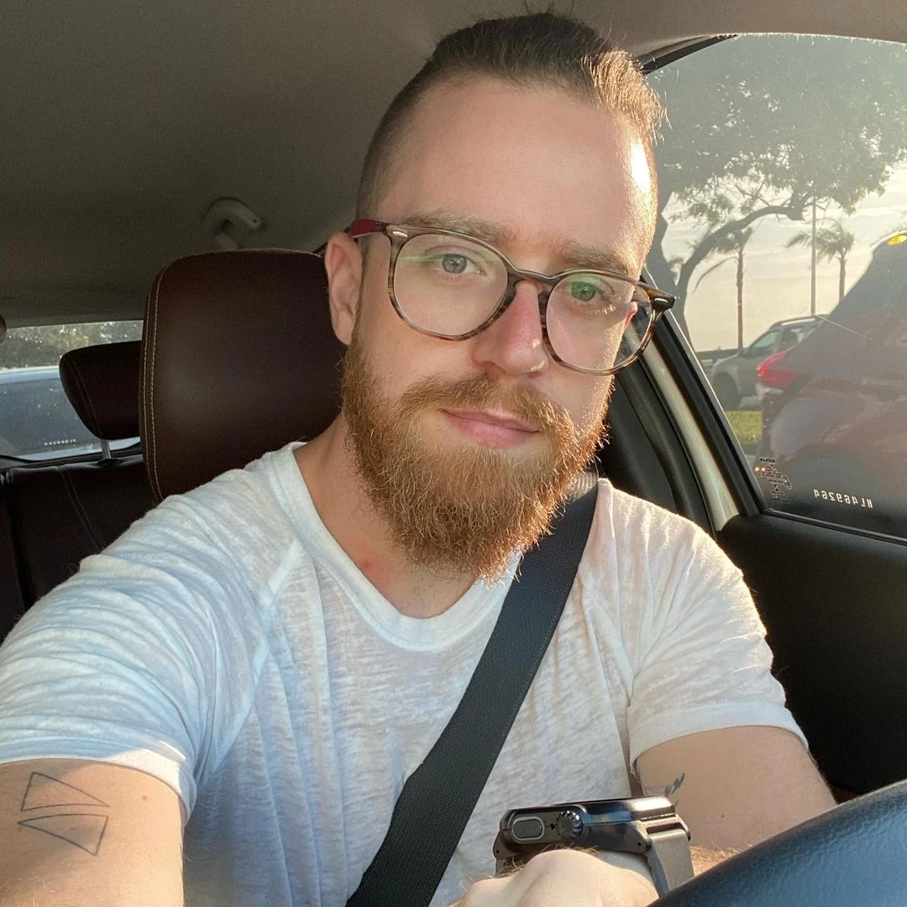
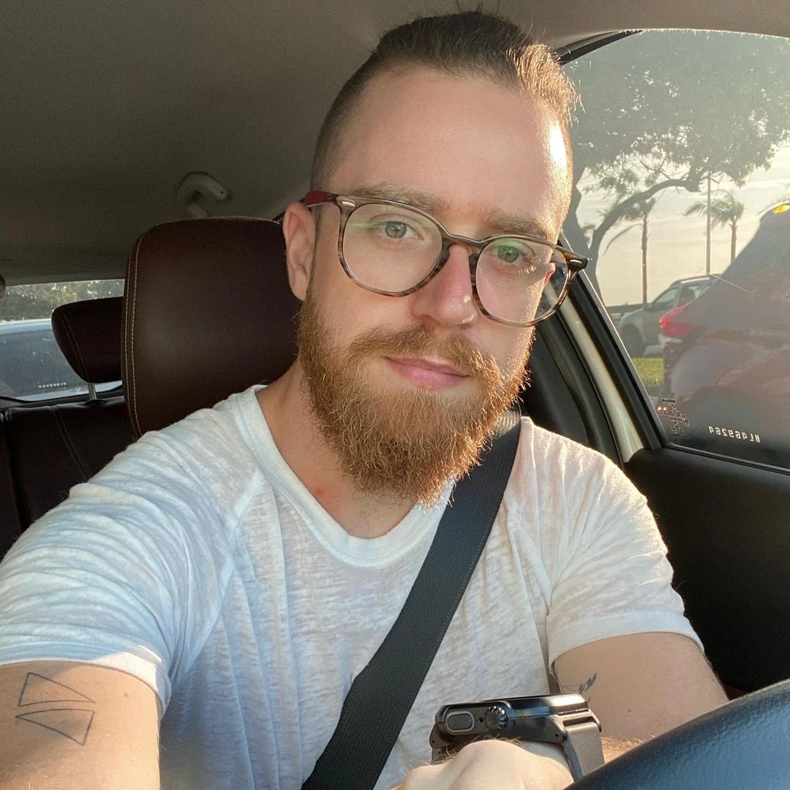

O Segredo na Floresta é a segunda temporada da série Ordem Paranormal, continuação de A Ordem Paranormal. É uma campanha de RPG de mesa baseada em uma versão adaptada do sistema Chamado de Cthulhu (do inglês, Call of Cthulhu). Mestrada pelo streamer Cellbit, é protagonizada por Cesar Oliveira Cohen, Cristopher Cohen, Elizabeth Webber, Joui Jouki, Thiago Fritz e posteriormente Arthur Cervero.
A série "A Ordem Paranormal" se passa em um universo onde existem duas dimensões: o Normal e o Paranormal. O Normal é onde nós vivemos como humanos, enquanto o Paranormal é um lugar completamente diferente, onde tudo que parece impossível pode se tornar real, o que normalmente estaria associado a espíritos, demônios, entre outros tipos de anormalidades ligadas ao pós vida, por exemplo.
No dia 11 de abril, por volta das dez horas da manhã, uma Equipe da Ordem da Realidade (nessa época chamada de "Ordem da Verdade") tem uma reunião marcada com o homem conhecido como Senhor Veríssimo na grande torre comercial Alfa, na avenida Faria Lima, em São Paulo. O primeiro a chegar é Joui Jouki, que após procurar pela sala de reunião indicada por Senhor Veríssimo, se encontra com os outros membros de sua equipe: Cristopher Cohen, Cesar Oliveira, Thiago Fritz e Elizabeth Webber.

 
